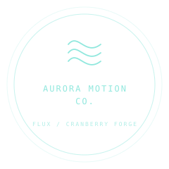
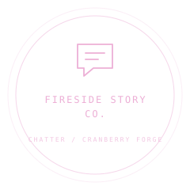
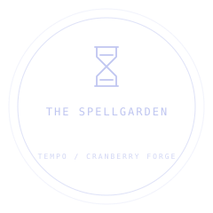
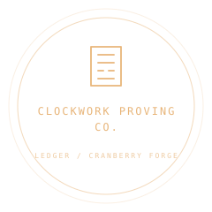
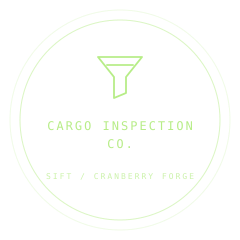
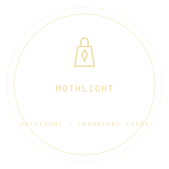
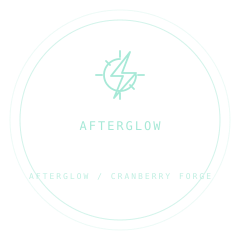

Terrain & placement
Biome →
A small seed. A living world.
CRANBERRY FORGE / DEVELOPER LIBRARY
Find your system. Learn its contract. Make it your own.
Integration guides, API references, and worked examples for 15 independent tools and two playable templates.

Terrain & placement
A small seed. A living world.

Motion trails
Make motion unforgettable.

Combat telegraphs
Make danger readable.

Contextual interactions
Make the world answer.

Splines & geometry
Take the scenic route.

Inventory & crafting
Every little thing, in its place.

Branching dialogue
Give your world someone to talk to.

Quests & objectives
Give every small action a purpose.

Grid pathfinding
A little direction. A world to explore.

Responsive motion
A little bounce. A lot of life.

Loot & probability
A little chance. A lot to discover.

Charges & cooldowns
A little patience. A little magic.

Stats & loadouts
Every bonus leaves a receipt.

Save migration
Progress deserves a future.

Asset validation
A build gate you can see.

Playable adventure
A small light. A way home.

Playable combat
Outrun the last sun.